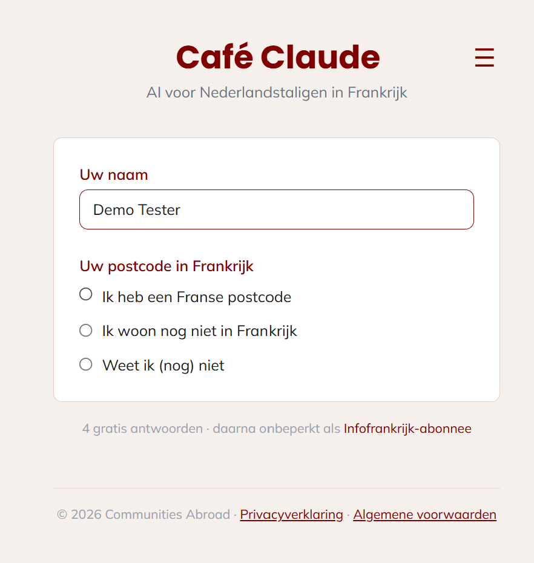
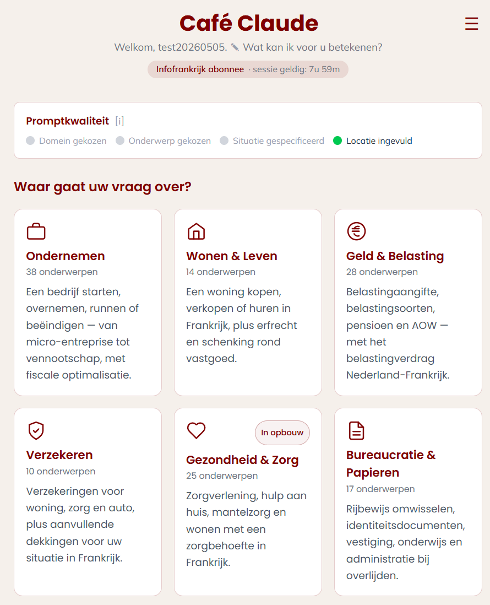
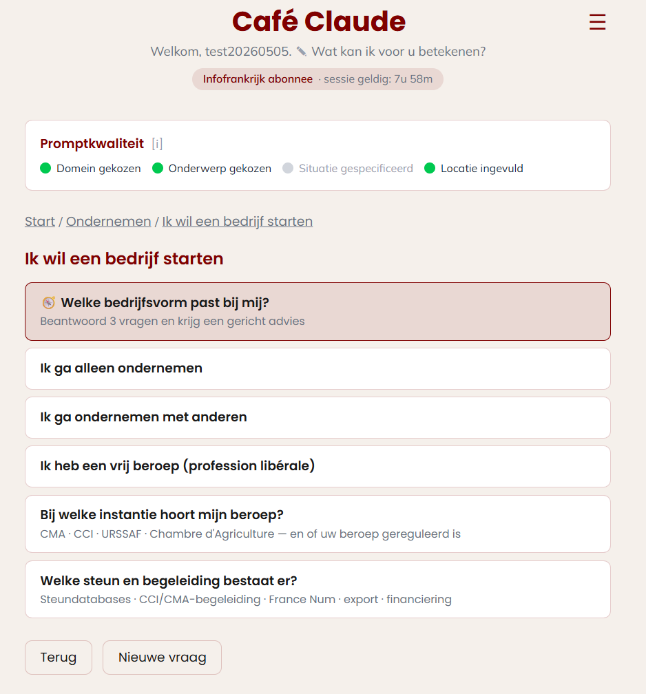
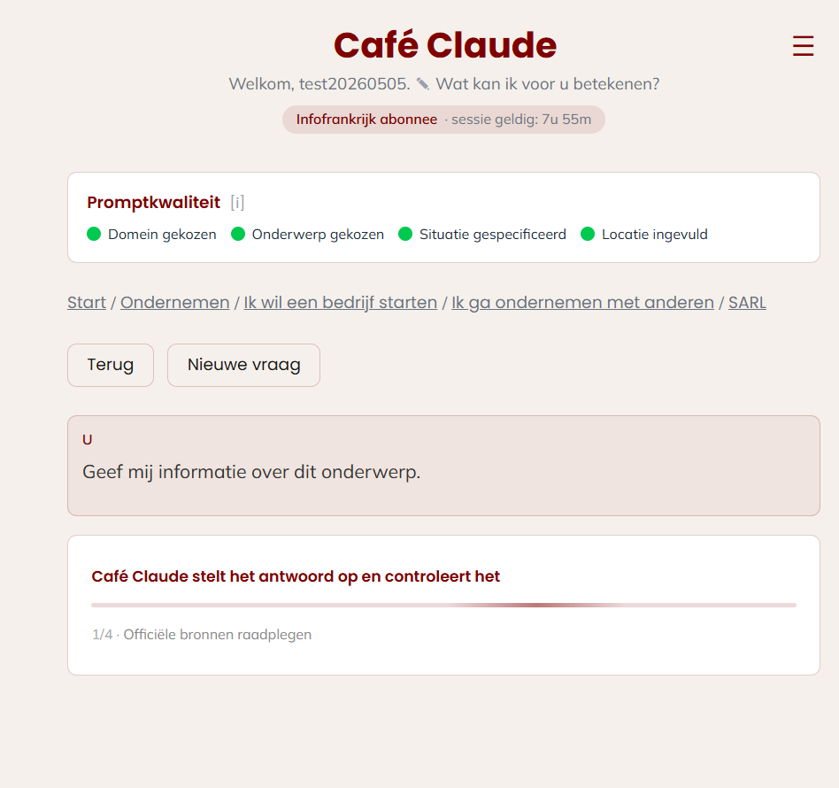
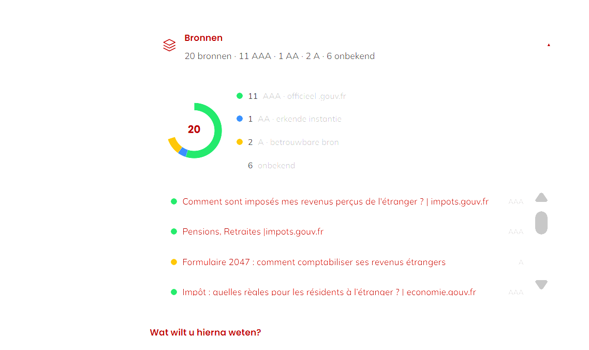
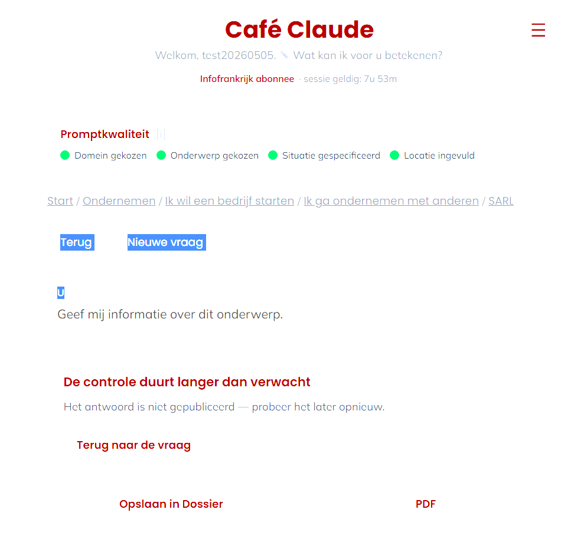
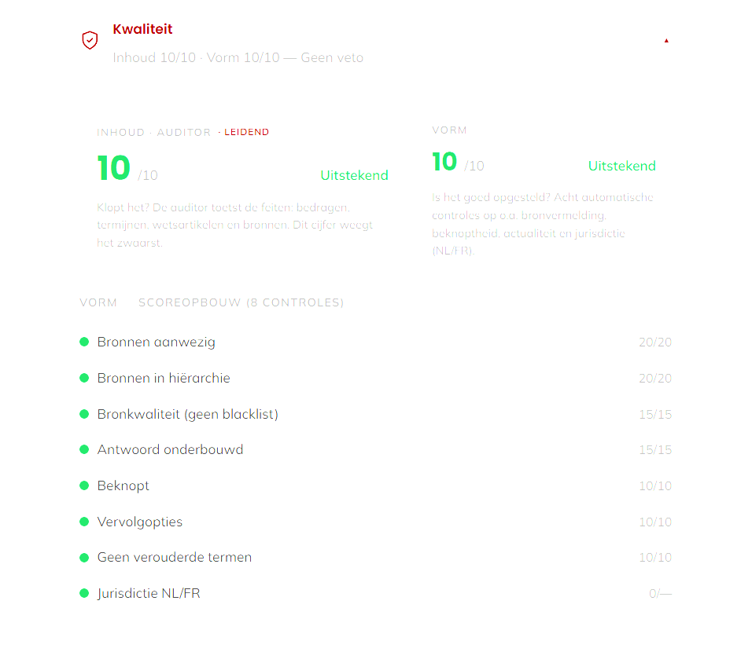
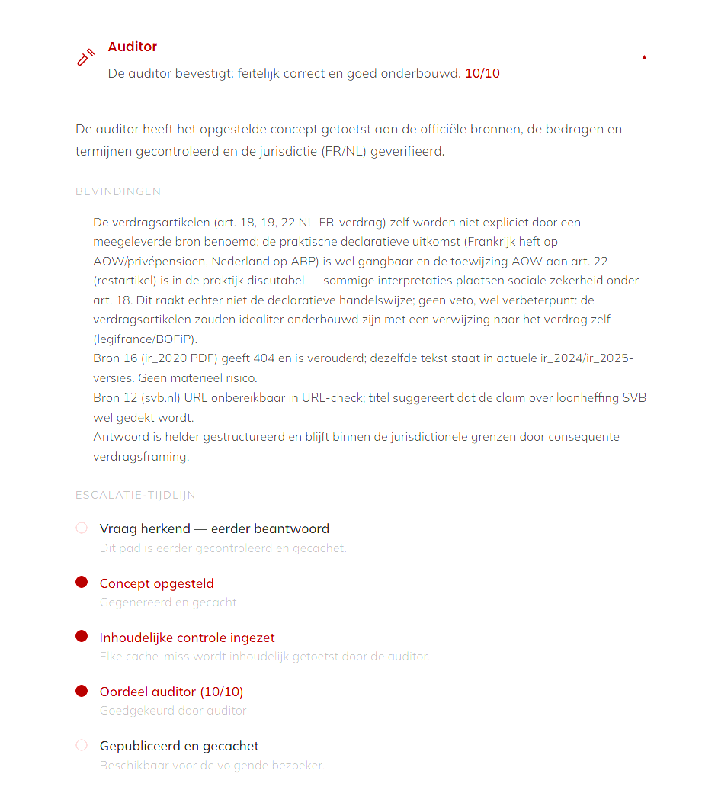
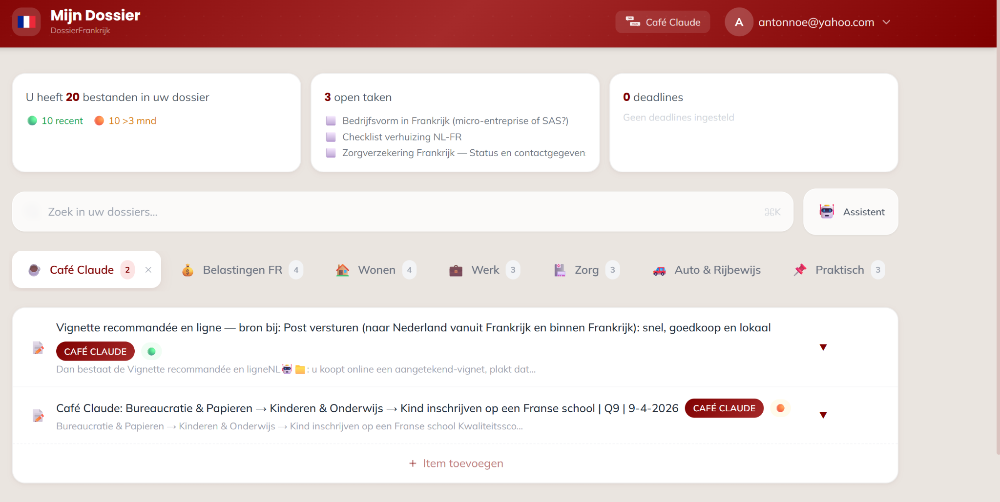

Een levende presentatie
Niet zomaar een antwoord.
Een controleerbaar antwoord dat blijft.
U ziet niet alleen de uitkomst, maar ook de herkomst, controle, Q-score en houdbaarheid.
Proefrit: 4 volledig gecontroleerde antwoordtrajecten.
01 — Start
Naam en locatie. Geen registratiecircus.
Café Claude gebruikt naam en Franse postcode of locatie om uw context te herkennen. Daarna volgt abonneeherkenning of de proefrit.
- Naam
- Postcode of locatie
- Proefrit of Infofrankrijk-abonnee

02 — Vraagfunnel
U typt niet. U kiest.
De vraag wordt stap voor stap opgebouwd: domein, onderwerp en situatie.
Domein
Ondernemen, wonen, geld, verzekeren, zorg of bureaucratie.

Onderwerp
De gebruiker kiest de route die past bij de informatiebehoefte.

Situatie
Gerichte vragen leveren de context voor een bruikbaar antwoord.

03 — Samengestelde vraag
Van klikken naar een concrete informatievraag.
Domein: Geld & Belasting
+
Onderwerp: Buitenlands inkomen
+
Situatie: Verhuizen naar Frankrijk
=
Welke inkomsten moet ik in Frankrijk opgeven als ik in Nederland pensioen ontvang en fiscaal inwoner van Frankrijk word?
04 — Bronlaag
De bronkeuze is vooraf begrensd.
De AI-agent zoekt niet willekeurig. Bronnen zijn vooraf geselecteerd en gerangschikt.
AAAOfficiële overheidsbronnen
AAErkende instanties
AAanvullende betrouwbare bronnen
No-goGeblokkeerd als onderbouwing
Nederlanders.fr is hier geen antwoordbron, maar een sonderingsmeter: daar wordt zichtbaar welke vragen werkelijk leven.

05 — AI-agent + AI-auditor
Twee strikt gescheiden rollen.
De eerste agent stelt op. De tweede controleert en scoort.
AI-agent
Stelt het conceptantwoord op met de geselecteerde bronnen en gebruikerscontext.
→
AI-auditor
Controleert feiten, bedragen, termijnen, brongebruik, actualiteit en jurisdictie.

06 — Definitief antwoord
De output is pas het begin van de verificatie.
De gebruiker kan zelf nagaan hoe het antwoord tot stand kwam.
07 — Tracking & tracing
Belangrijker dan het antwoord zelf.
Herkomst, controle en actualiteit van het definitieve antwoord blijven inspecteerbaar.
Vraagcontext
Bronnenclassificatie
Controle8 criteria
Q-scorekwaliteit
Datumhoudbaarheid


08 — Alleen indien nodig
Q lager dan 8? Dan volgt een gerichte retry.
Niet de gebruiker, maar het kwaliteitssysteem bepaalt of herstel nodig is.
Q 7,2onder drempel
→
Retrymislukte controles worden verbeterinstructies
→
Q 8,8publiceerbaar
De normale route loopt rechtstreeks van het gecontroleerde antwoord naar publicatie. Retry is de uitzondering.
09 — Eén ecosysteem
Drie onderdelen. Eén persoonlijke kennishub.
Café Claude en Infofrankrijk voeden DossierFrankrijk via twee gelijkwaardige routes.
Café Claude
Controleerbare antwoorden
- bronnen
- Q-score
- auditorbevindingen
- houdbaarheidsdatum
→
DossierFrankrijk
Blijvende persoonlijke kennishub
- bewaart versies naast elkaar
- ordent met toestemming
- signaleert inconsistenties
- waarschuwt voor houdbaarheid
Infofrankrijk
Dossiers, tools en berekeningen
- kennisdossiers
- rekenmodules
- simulaties
- scenariobuilders
↗
10 — IF → DF
Ook tool-output wordt onderdeel van uw kennishub.
Een concreet voorbeeld is het Financieel Kompas: netto-inkomsten in Frankrijk en Nederland vergelijken, scenario’s doorrekenen en de uitkomst direct bewaren.
Bekijk het Financieel Kompas →11 — Blijvende waarde
Wat u opbouwt, blijft toegankelijk.
Ook na beëindiging van het abonnement blijft de opgeslagen inhoud beschikbaar. Alleen de actieve AI-assistent vervalt.
- oude antwoorden blijven bewaard
- actuelere versies worden toegevoegd, nooit overschreven
- de persoonlijke kennishub blijft raadpleegbaar
- de Dossier Assistent is alleen actief voor abonnees

Eerst testen. Daarna beslissen.
Controleer het verschil zelf.
Vier volledig gecontroleerde antwoordtrajecten als proefrit. Daarna onbeperkt verder als abonnee.
Café Claude genereert informatie met AI en vervangt geen professioneel advies.